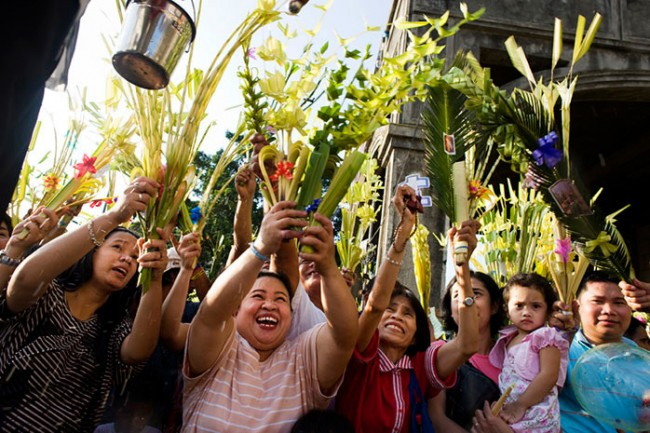

|

|
Description
Holy Week, locally known as Semana Santa, represents one of the Philippines' most significant religious observances. This week-long commemoration of Christ's passion, death, and resurrection showcases the unique blend of Catholic traditions and indigenous Filipino cultural practices that have evolved over centuries of religious devotion.
- Palm Sunday: Marks Jesus' triumphant entry into Jerusalem
- Holy Monday to Holy Wednesday: Start of pabasa or continuous chanting of Christ's passion
- Maundy Thursday: Commemorates the Last Supper
- Good Friday: Prusisyon, Senakulo, Penitensya, Pabasa ng Pasyon
- Black Saturday: A day of solemn waiting and preparation for Easter celebrations
- Easter Sunday: Joyful celebration of Christ's resurrection
|